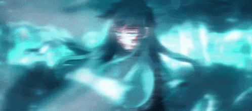

MUICHIRO QUEST
Has llegado al final del camino. La niebla es más espesa que nunca y los recuerdos de Muichiro están fragmentados.
Solo tú puedes ayudarlo a recordar quién es antes de que el invierno lo cubra todo.
✨ RESCATADO ✨
Muichiro ha recuperado su luz gracias a ti. Ahora necesita que cuides su camino de regreso.
Misión del Atrapasueños:
Encontrarás un Atrapasueños en tu habitación. Cuélgalo sobre tu cama esta noche.
Tus sueños guiarán a Muichiro a través de la oscuridad. Mientras él descansa contigo, tú serás su pilar.
Mensaje de Muichiro 🌫️
"Gracias por rescatarme... no solo hoy, sino por recordarme que no estoy solo."
"Ese Atrapasueños que cuelga sobre ti es como tu voluntad y tu voluntad es tu pilar: disipa las pesadillas y deja pasar solo lo bueno. Nunca dejes de rescatar tus sueños, incluso cuando la niebla sea espesa. Tienes la fuerza de un Pilar en tu corazón. Prometo cuidar tus sueños asi como tú siempre te rescatas a ti misma."
— Muichiro Tokito